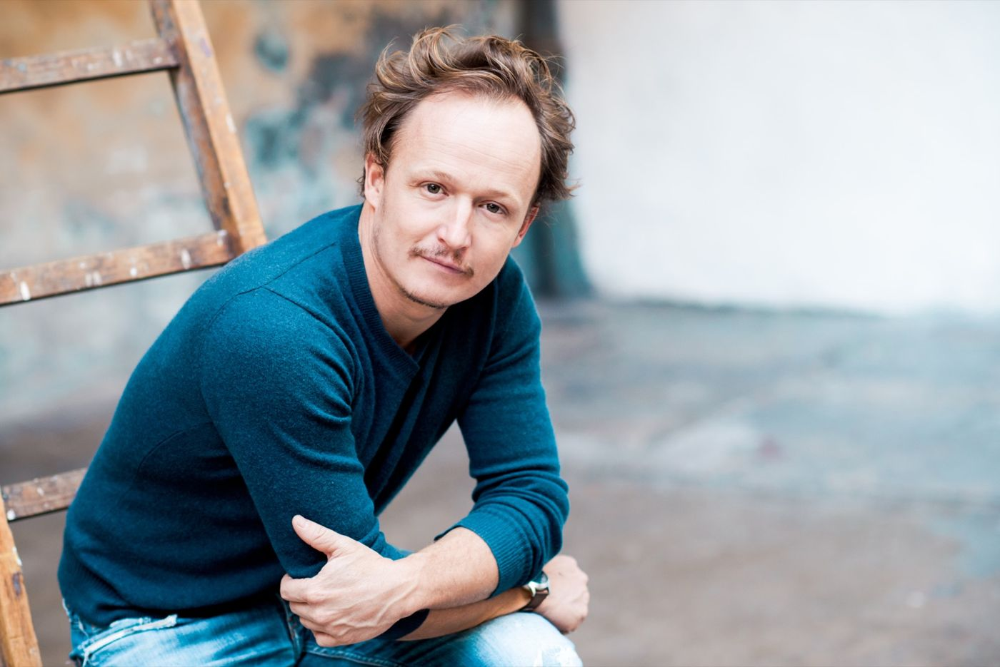

Comédien
Je suis venu au théâtre par le théâtre universitaire à Rennes. Depuis, je joue comme comédien-musicien en salle et dans l'espace public.

Arts de la rue
- depuis 2003Décor Sonore
Comédien, musicien percussionniste et acrobate dans les créations du compositeur Michel Risse, Urbaphonix et Instrument | Monument. Compagnie d'art sonore en espace public conventionnée par la DRAC Île-de-France, en tournée en Europe, en Chine, au Mexique, en Égypte et en Israël.
Théâtre
- 2002 – 2008Cie 13/10e en Ut, Rennes
Formation d'acteur puis comédien dans cette compagnie de théâtre contemporain conventionnée par la DRAC Bretagne. Gaspard de Peter Handke.
Cinéma et télévision
- 2007 – 2016Rhône-Alpes et Provence-Alpes-Côte d'Azur
Petits rôles et figuration dans des films et téléfilms produits en région.
Formation d'acteur
- 2002 – 2004Sylvain Ottavy et Frédérique Mingant
Deux ans de formation professionnelle au sein de la Cie 13/10e en Ut, après un stage universitaire sur Maïakovski.
- 2005Charlie Windelschmidt et Roland Fichet
Stage national de réalisation, Brest.
- 2006Robin Renucci, Serge Lipszyc, Raphaël Almosni, Pierre Vial, Alan Boone, Gérard Chabanier
9es Rencontres internationales de théâtre en Corse, ARIA : masque neutre et masque de caractère, diction, voix, burlesque.
- 2006Bob McAndrew
Le jeu devant la caméra, Paris.
- 2006Antoine Le Menestrel
Théâtre acrobatique.
- 2009Marcial Di Fonzo Bo
Une poétique de la complexité, Lyon. Pour mon mémoire de master, j'ai ensuite suivi son intervention avec Pierre Maillet à l'école de théâtre de Lausanne.
- 2010Philippe Calvario et Thierry de Peretti
Interpréter les écritures contemporaines, Koltès et Copi, Paris.
- 2010Gwenaël Morin
Théâtre du Point du Jour, Lyon.
- 2011Martine Rateau (Cie Oposito), Cie Jeanne Simone, Cie Kamchatka, Ici-Même
Clown, performance et théâtre de rue.
- 2012Pierre Pilatte
Détour dans l'espace public, Lyon.
Danse
- 2000 – 2002Conservatoire de Rennes
Cursus de danse contemporaine et classique.
- 2001 – 2004Emio Greco, Catherine Diverrès, Damien Jalet
Stages au Théâtre National de Bretagne.
Formation continue
Les artistes qui interviennent régulièrement dans mes cours au conservatoire participent aussi à ma formation continue : Christophe Patty, François Cervantes, Geoffrey Rouge-Carrassat, Clémence Coullon.